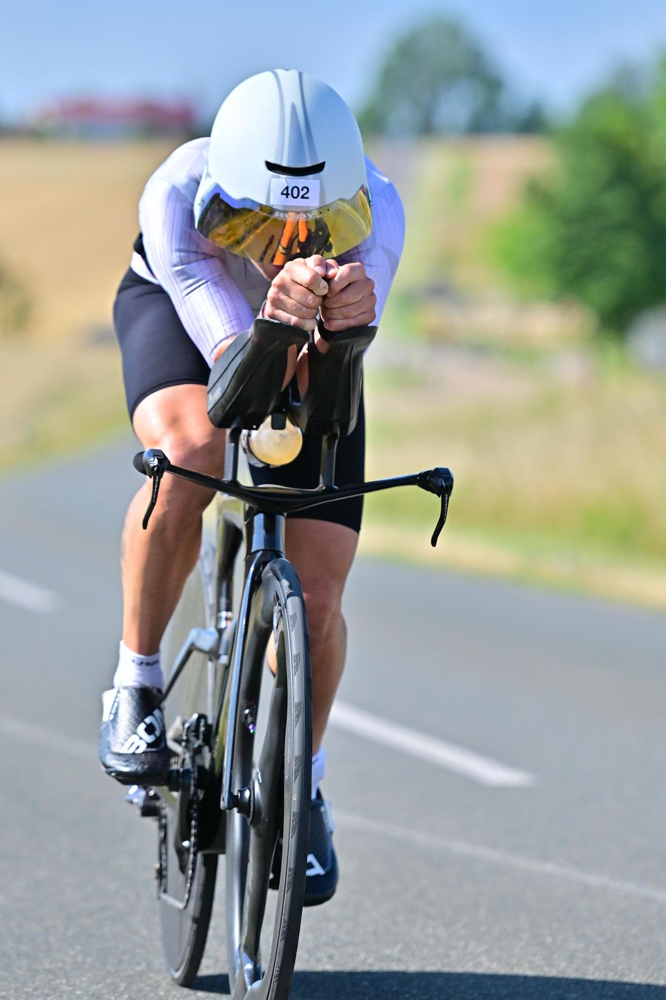
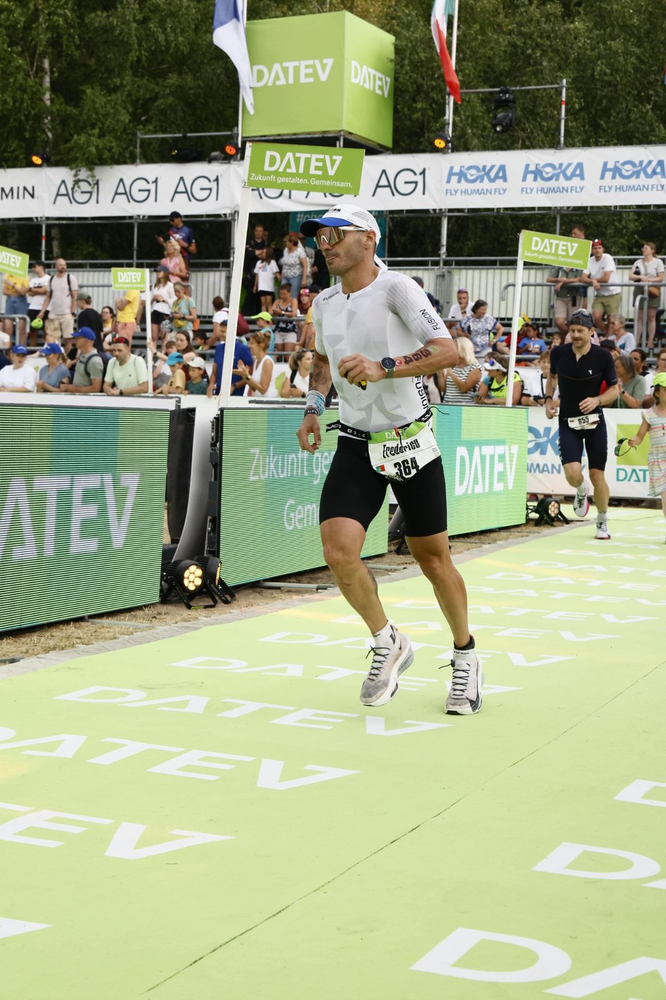
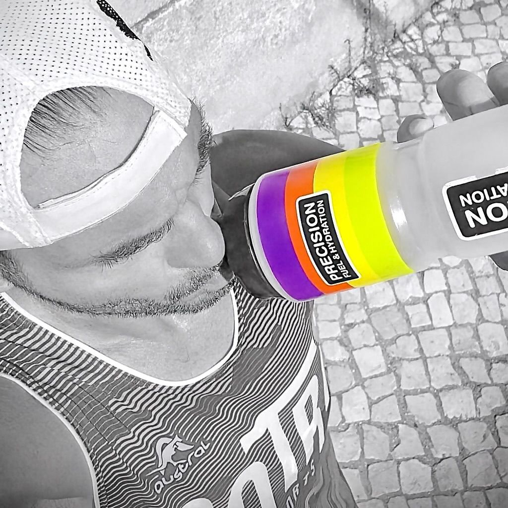
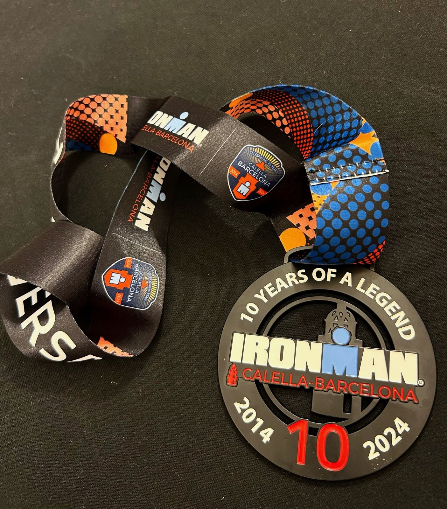

Swim. Bike. [Trail]Run. Rest. Repeat.
From elite trail running to age-group triathlon.
I started trail running in 2014 and raced my first triathlon in 2019.
I track about 80% of my sessions, and the numbers below come straight from my Garmin.
01 · About
Since
2013.
I started running regularly in 2013. In 2014 I discovered trail running, and for six years I focused on its different distances and raced alongside the best in the sport.
In 2019 I took up triathlon and kept trail running only as a complement to my training.
I'm still hooked on endurance sport.

- 2019 · Triathlon
First triathlon season.
Started with a Sprint, loved it and quickly jumped to a Half. I could barely swim :)
- 2022 · IRONMAN
First IRONMAN.
Raced at home. Managed to go sub 3h on the marathon – was the happy part.
- 2027 · Next
IRONMAN 70.3 Vilamoura-Algarve.
My 2027 season opener.
02 · Results
Results
Some of the races that stood out for the experience, for the result, or simply for the chance I had to finish them.
Personal Records
Zwift Academy Run 2023
Lisbon Half Marathon Mar 2026
Seville Marathon Feb 2024
Triatlo Longo de Caminha May 2025
IRONMAN Calella-Barcelona Oct 2024
- Loading results…
03 · Trail Run
Off
road.
I discovered trail running in 2014. I fell for it fast, and before long I ran my first Ultra in the mountains (any race longer than a marathon).
I focused on ultra-trail and raced at Elite level in the main events of the Portuguese National Championships. Along the way I specialised in skyrunning, the more technical side of the sport, on steeper ground with more elevation.
I also got to race on some of the biggest stages in European trail running, like the Ultra-Trail du Mont-Blanc® in the Alps and the Pyrenees of Andorra.
Running in the mountains has always been my favourite refuge.

km off-road
metres climbed (D+)
– hours on the trails
km in one go
- 2018Ultra-Trail du Mont-BlancChamonix · 171 km · 9,990 m D+
- 2019Andorra Ultra TrailAndorra · 83 km · 5,000 m D+
- 2021UTMB TDSCourmayeur · 147 km · 9,035 m D+
04 · Training
Every
session.
I've trained with a professional coach since 2015. For the last few years I've followed an 80/20 approach: most of the volume easy, a small, well-dosed slice hard.
The numbers below update daily from Garmin Connect, but they don't show everything: most swims aren't recorded on a device, easy and recovery runs are done by feel (RPE) without a watch, and some indoor sessions live only in ROUVY or Zwift.

km in – sessions
km in – sessions
km in – sessions
Typical week: – · swim – · bike – · run –+
- Loading…
Updated –
05 · Partners
Partners
The brands backing me right now.
For partnerships, race invitations or other inquiries, see Contacts.





